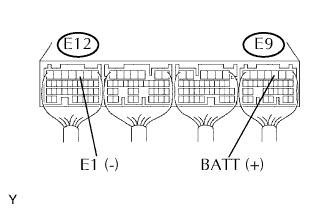

HỆ THỐNG SFI > Mạch Nguồn Dự Phòng ECM |
| 1.KIỂM TRA CẦU CHÌ (EFI) |
Tháo cầu chì EFI ra khỏi hộp rơle và cầu chì khoang động cơ.
Đo điện trở giữa của cầu chì.
|
| ||||
| OK | |
| 2.KIỂM TRA ECM (ĐIỆN ÁP BATT) |
|  |
Bật khoá điện ON.
Đo điện áp của các giắc nối ECM.
| Nối dụng cụ đo | Điều kiện tiêu chuẩn |
| E9-3 (BATT) - E12-3 (E1) | 8 đến 14 V |
|
| ||||
| NG | |
| 3.KIỂM TRA DÂY ĐIỆN (ECM - CẦU CHÌ EFI, CẦU CHÌ EFI - ẮC QUY) |
Kiểm tra dây điện giữa cầu chì EFI và ECM.
Tháo cầu chì EFI ra khỏi hộp rơle và cầu chì khoang động cơ.
Ngắt giắc nối E9 của ECM.
Đo điện trở của các giắc nối phía dây điện.
| Nối dụng cụ đo | Điều kiện tiêu chuẩn |
| Cực 2 của cầu chì J/B EFI - E9-3 (BATT) | Dưới 1 Ω |
| Cực 2 của cầu chì J/B EFI hay E9-3 (BATT) - Mát thân xe | 10 kΩ trở lên |
Kiểm tra dây điện giữa cầu chì EFI và ắc quy.
Tháo cầu chì EFI ra khỏi hộp rơle và cầu chì khoang động cơ.
Tháo cáp ra khỏi cực dương ắc quy.
Đo điện trở của các giắc nối phía dây điện.
| Nối dụng cụ đo | Điều kiện tiêu chuẩn |
| Cáp dương của ắc quy - Cực 1 của cầu chì EFI của J/B | Dưới 1 Ω |
| Cáp dương của ắc quy hoặc cực 1 của cầu chì EFI của J/B - Mát thân xe | 10 kΩ trở lên |
|
| ||||
| OK | ||
| ||